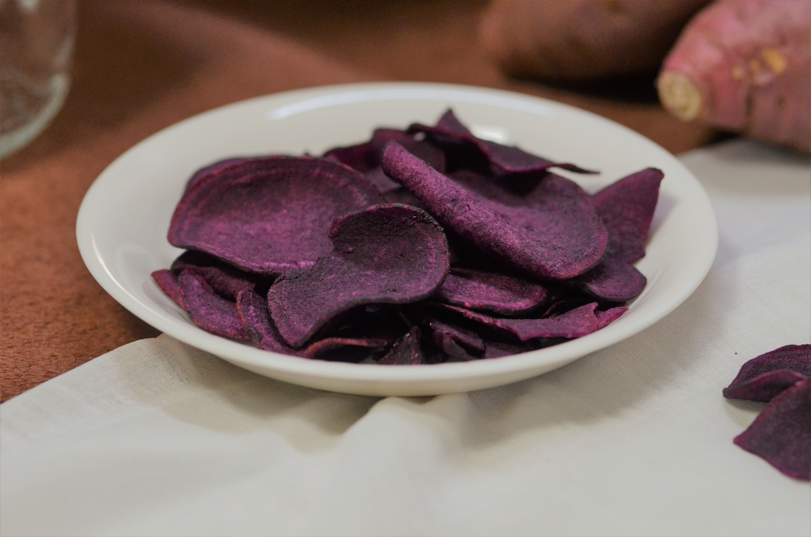
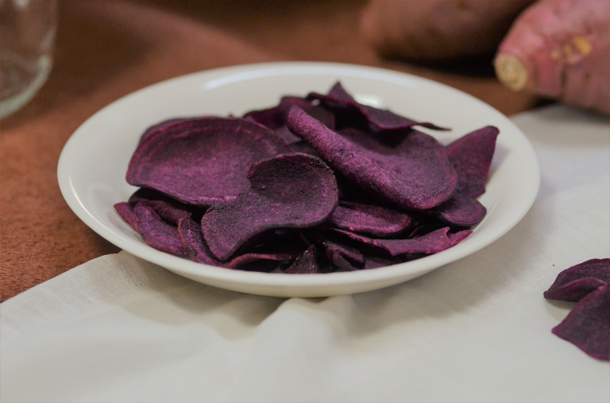
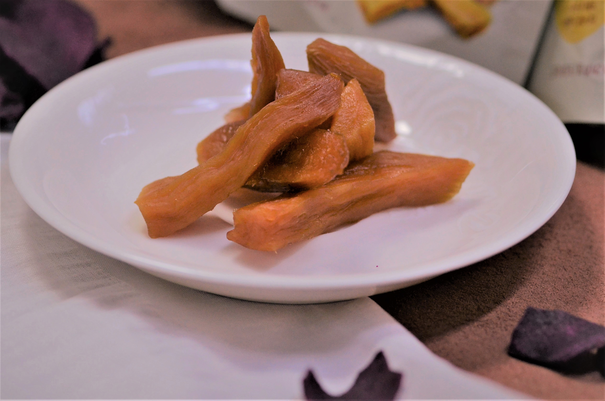
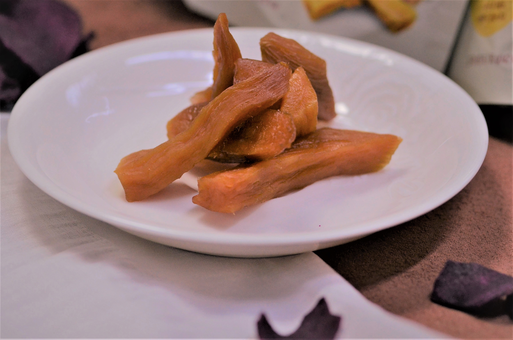

리뷰
 

달콤바삭 자색고구마 3개
880원
포켓에 쏙 들어가는 자색고구마 칩. 정말 딱 적당한 사이즈에 입가심하기 좋은 양이다. 덜 달달하고 고소한 맛이 강해서 좋다. 2개만 더있으면 좋을것같다.
 

촉촉한고구마 말랭이 2개
840원
쫄깃하고 전자레인지에 돌려 먹으면 더 맛있다. 생각보다 큼직큼직하고 배가 찬다.

아몬드고구마라떼 10T
2,900원
다 바삭바삭하고 마른 간식들이라 라떼가 있어 좋았다. 너무 무겁지 않고 달달하다. 토핑이 씹히면서 고구마의 향과 달달함이 올라오는데 '자일로스 설탕으로 단맛은 그대로 부담없이 즐길 수 있다' 써있다. 물을 끓여 라떼를 타는 중 보이는 포장지의 꽃피는 아몬드나무 그림이 예뻐서 보는 맛이 있었다.
300g 고구마스틱
3,000원
바삭바삭하고 달달한 고구마스틱이야. 양이 아주 풍부하고 스틱형이라 씹는 맛이 있어 옆에 두면 손이 많이 간다.
110g 고구마 3개
600원
매일 경매를 통해 새롭게 공수한 국내산 상품이라 믿음이 간다. 혼자 간식으로 쪄먹기 적당하다.